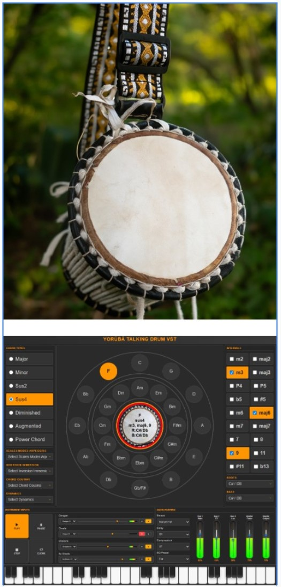

Restoring the spiritual frequency and digital rhythm of our people.
Sing along to the beat by counting in any language.
🥁 THE YORÙBÁ TALKING DRUM VST
A Manifesto for the Digital Resurrection of African Rhythm
I. The Drum That Spoke Before Words Were Written
Long before the first telegraph hummed across Western continents, long before Morse code tapped its way into history, long before the internet connected the world — there was a drum
that spoke. In the lush forests and rolling savannas of Yorùbá-land, the Gangan — the Talking Drum — was the original telecommunications device. Cradled under the arm of a master drummer, its leather face stretched across sacred wood, its tension cords pulled and released with surgical precision, this drum did not merely produce rhythm. It spoke sentences. It delivered messages. It announced destinies.
When a king was crowned, the drum declared it. When a warrior fell, the drum mourned it. When a child was named, the drum blessed it. When danger approached, the drum warned entire villages faster than the swiftest runner could travel.
This was not primitive technology. This was advanced communication — encoded in tone, pitch, and rhythm. The Yorùbá language, with its three distinct tones, found its perfect mirror in the voice of the Talking Drum. High tone. Mid tone. Low tone. The drum could replicate them all. The drum could speak Yorùbá.
For centuries, this sacred instrument travelled with our people. It crossed the Atlantic on slave ships, hidden in memory when the physical drums were confiscated. It resurfaced in Cuba as the Batá. It echoed in Brazil's Candomblé ceremonies. It pulsed through the jazz clubs of New Orleans, the Carnival streets of Trinidad, the gospel churches of the American South. Wherever the Yorùbá went — willingly or in chains — the rhythm followed. The drum could not be silenced. The voice could not be stolen. The technology could not be erased. And now, in the year 2026, we have done something unprecedented.
We have taken this ancient speaking technology and digitized it for eternity.
Welcome to the Yorùbá Talking Drum VST.
Ii. More Than Software — A Cultural Time Machine
Let us be clear about what this is and what this is not. This is not a sample pack of "African sounds" for Western producers seeking exotic flavors. This is not a novelty plugin to add "world music" vibes to generic beats. This is not cultural tourism wrapped in a digital interface. This is restoration. This is resurrection. This is reclamation.
Inside this software lives the authentic voice of four sacred instruments:
The Gangan — The master Talking Drum itself. The lead voice. The one that carries the message. In traditional ensembles, the Gangan player is often the most skilled, for they must know not just rhythm, but language. They must know how to make the drum speak proverbs, recite lineages, and call names. With 17 variations captured in this VST, you hold 17 different voices of this ancient messenger.
The Shekere — The gourd rattle wrapped in beads, providing the shimmering, persistent rhythm that holds everything together. The Shekere is the timekeeper, the steady pulse beneath the conversation of the drums. With 17 variations, you have access to every shade of its crystalline voice.
Iii. Design As Declaration
When we set out to create the visual interface of the Yorùbá Talking Drum VST, we faced a choice that many African technologists face: Do we make it look "modern" — which often means "Western"? Do we strip away cultural identity to appear "professional"? Do we hide our heritage to gain acceptance in the global marketplace?
We chose differently.
We chose to make the interface unmistakably, unapologetically, magnificently African.
At the heart of the VST sits a reimagined Circle of Fifths — the fundamental tool of Western music theory, but rendered with Yorùbá aesthetic sensibility. It glows in deep oranges and rich earth tones. It pulses with the same colors that adorn our traditional textiles, our palace walls, our ceremonial robes. The dark panels that surround the controls honor the discipline and focus of the master drummer who trains for years before earning the right to speak through the Gangan. The professional mixer section, with its Bus routing, faders, and meters, meets every standard of world-class audio production — because excellence is not a Western invention. Our ancestors were masters of precision. We simply continue their legacy.
The 3D design transformation we applied to this VST is more than aesthetic choice. It is a declaration:
African technology can be beautiful, sophisticated, and functional — all at once.
African software does not need to apologize for its origins.
African innovation stands on its own merit.
When a producer in Tokyo opens this VST, they will know immediately that they are touching something from Africa. When a student in Berlin loads this plugin, they will feel the weight of culture in every pixel. When a professional engineer in Atlanta reaches for these drums, they will understand that this is not borrowing — this is receiving from the source.
Iv. The Sacred Union: Mathematics Meets Music
Now, you may wonder: why is a virtual instrument part of the Ònka Yorùbá Project — a project dedicated to digitizing Yorùbá numbers? The answer reveals one of the deepest truths of our culture. In Yorùbá cosmology, mathematics and music are not separate disciplines. They are twin expressions of the same divine order. The universe was spoken into existence through sound, and that sound follows mathematical patterns. The drum does not merely make noise — it counts. It calculates. It measures time and space through rhythm. Consider this: the Yorùbá language has three tones — High, Mid, and Low. These tones are not ornamental. They are semantic. The same syllable pronounced with different tones means different things. "Ọwọ" with one tonal pattern means "Money." With another pattern, it means "hoe." With yet another, it means "vehicle." The Talking Drum, by modulating its pitch through tension, can replicate these tones. It can therefore speak actual words. It can recite proverbs. It can call names. It can deliver messages with the semantic precision of human speech. This is not metaphor. This is linguistic mathematics encoded in rhythm.
The Ònka Yorùbá Project has digitized 0 – Tredecillion Plus Yorùbá numbers — from zero to Tredecillion Plus. We have built calculators that compute in our ancestor's tongue. We have created calendars that mark time in Yorùbá. We have developed age calculators, number converters, and educational scroll books. And now, with the Talking Drum VST, we have added music to this digital renaissance. Because if our children can count in Yorùbá, they should also be able to drum in Yorùbá. If our mathematicians can calculate in their ancestor's tongue, our musicians should be able to compose in their cultural voice.
If we are building a sovereign digital future, that future must include not just logic, but rhythm. Not just numbers, but song. Not just precision, but soul. The Yorùbá Talking Drum VST is not a departure from the Ònka Yorùbá mission. It is its fullest expression.
V. For The Novice And The Master Alike
One of our deepest commitments is radical accessibility.
We did not build this VST only for Grammy-winning producers with decades of experience. We built it for the teenager in Ibadan discovering music production for the first time. We built it for the young-hearted in Salvador, Brazil, who wants to hear the drums her ancestors played. We built it for the curious soul in Mumbai who has never touched a Yorùbá drum but feels drawn to its voice. That is why the Yorùbá Talking Drum VST includes:
For Beginners:
- Intuitive interface that welcomes first-time users
- Pre-set instrument combinations for instant inspiration
- Visual feedback that shows exactly what is happening in real-time
- Piano keyboard display for those learning music theory
For Professionals:
- Professional-grade mixer with individual instrument channels
- Bus routing system (Main, FX, Aux) for complex signal flow
- Multiple variations per instrument for studio-quality layering
- Effects chain: Reverb, Delay, Compression, EQ presets
- Chord type selectors and interval controls for harmonic exploration
- Real-time level meters for precise monitoring
Whether you have never produced a single beat or have platinum records on your wall, this VST meets you where you are. The drums do not discriminate. The rhythm does not judge. The heritage belongs to everyone willing to receive it.
Vi. The Drum Crosses Oceans Again
Our ancestors did not choose to cross the Atlantic. They were taken. over a Tredecillion of Yorùbá people — kings, priests, farmers, fathers, mothers, children — were ripped from their homeland and scattered across the Americas. But they did not go empty.
They carried the rhythm in their bodies. They remembered the patterns in their bones. They recreated the drums in secret, in plantation quarters, in underground ceremonies, in coded church services that looked Christian on the surface but spoke Yorùbá in the spirit.
The Talking Drum influenced jazz. It shaped blues. It birthed salsa, samba, reggae, hip-hop. Every genre that pulses with African rhythm owes a debt to the drummers who refused to forget. Now, with the Yorùbá Talking Drum VST, the drum crosses the ocean again — not in chains, but in code. Not in suffering, but in sovereignty. Not taken, but given freely.
We are sending the drum back to the diaspora: to the Afro-Cubans in Miami, the Afro-Brazilians in São Paulo, the Afro-Caribbeans in Kingston, the African Americans in Chicago, Detroit, and Houston. We are saying: This is yours. It was always yours. Now take it back.
And we are sending the drum forward to the world: to the producers in Seoul making Afrobeats fusion, to the composers in Vienna seeking authentic African voices, to the film scorers in Hollywood who need more than stereotypical "jungle drums."
We are saying: Come to the source. Stop sampling samples. Touch the real thing.
Vii. The Economics Of Liberation
In the global music industry, African sounds are often extracted, processed, and sold without attribution, compensation, or respect. Our rhythms fuel billion-dollar genres while our musician’s struggle. Our drums appear in blockbuster films while our communities see no royalties. The Ònka Yorùbá Project operates on a different economics — the economics of liberation. The Yorùbá Talking Drum VST is 100% free.
Not "free trial." Not "freemium with limitations." Not "free but you need to pay for the good samples." Free. We believe that cultural heritage should not be locked behind paywalls. We believe that an African child in a rural village should have access to the same tools as a wealthy producer in Manhattan. We believe that the pathway to restoring our culture cannot be blocked by economic barriers. When over a Tredecillion of people use the Yorùbá Talking Drum VST, they do more than make music. They become ambassadors. They spread the sound. They ask questions: "What is this instrument? Where does it come from? Who are the Yorùbá people?" Every beat made with this VST is a seed planted. Every song released is a lesson taught. Every producer who credits "Yorùbá Talking Drum VST" is a multiplier of our message. We are not selling drums. We are growing a movement.
Viii. The Vision: What Comes Next
The Yorùbá Talking Drum VST is not the destination. It is a milestone on a much longer road. Here is what we see on the horizon: More instruments. The Yorùbá musical tradition includes dozens of instruments beyond the Talking Drum. The Dùndún ensemble. The Bàtá drums sacred to Ṣàngó. The Àgídìgbo thumb piano. The Ṣẹ̀kẹ̀rẹ̀ in all its regional variations. Each deserves the same treatment we gave the Gangan.
More languages. What we have done for Yorùbá, we intend to see done for every indigenous language around the world. Each language has its own drums, its own rhythms, its own mathematical music waiting to be digitized.
More tools. The Ònka Yorùbá Project continues to expand. We envision Yorùbá language keyboards. Yorùbá-speaking AI assistants. Yorùbá programming languages. Yorùbá financial systems. Every technology that exists in English should eventually exist in our ancestor's tongue. More multipliers. We cannot do this alone. We are calling developers, linguists, musicians, educators, and visionaries to join this mission. If you can code, compose, teach, or dream — your hands are welcome on this plow. The restoration of African digital identity is not a sprint. It is a generational marathon. We are laying foundations that our grandchildren will build upon. We are planting trees whose shade we may never sit under. We are beginning a work that will continue long after our names are forgotten.
But it must begin. And it has begun. And the drum is calling.
Ix. A Closing Invocation
So we say to you, wherever you are reading this:
To the producer in Lagos hunched over a cracked laptop, dreaming of global stages — the drums of your ancestors are now at your fingertips. Use them. Make something that shakes the world.
To the music student in London searching for your sonic identity — you don't have to choose between "African" and "professional." The Yorùbá Talking Drum VST proves they are the same thing.
To the elder in Salvador, Brazil who still remembers the stories your grandfather, or grandmother talked about the drums — the sound has come home. Press play. Close your eyes. Remember.
To the curious listener in Tokyo, Berlin, Mumbai, or Minneapolis who has never heard of the Gangan — welcome. The drum does not ask for your credentials. It asks only for your ears and your heart.
To every child around the world who was ever told that your culture is backward, your language is useless, your traditions are outdated — they lied. The Talking Drum is one of the most sophisticated communication technologies ever created. Your heritage is not a burden. It is a superpower.
The drum spoke for kings. Now it speaks for you.
X. The Final Word
Our ancestors could not have imagined a world of laptops and virtual instruments. They could not have conceived of sounds traveling through fibreoptic cables across oceans in milliseconds. They could not have dreamed of a device in your pocket more powerful than all the computers that sent humans to the moon. But they would have understood this:
The voice of the people must never be silenced. The rhythm of the culture must never be broken. The technology of the tribe must always evolve.
They encoded their language in drums because drums could not be burned like books. They hid their mathematics in rhythm because rhythm could not be confiscated like instruments. They preserved their identity in sound because sound lives in the body, and the body crosses borders. Now we encode their legacy in code. We preserve their identity in software. We carry their voice in data. The medium has changed. The mission remains the same.
One language restored is a victory. A global restoration is our mandate.
The Talking Drum speaks again.
Can you hear it?